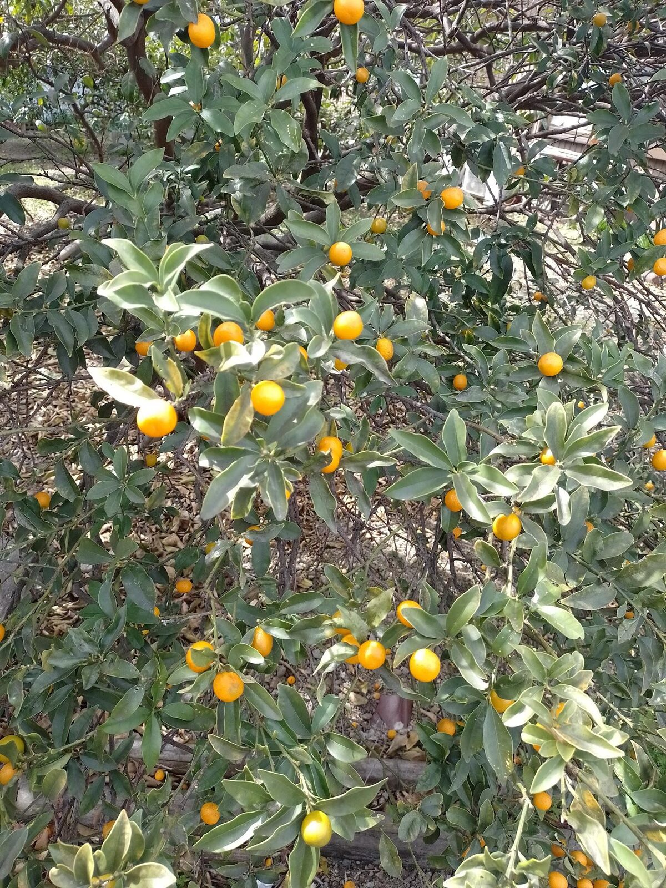
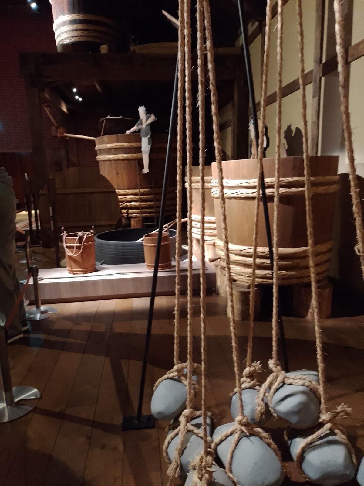
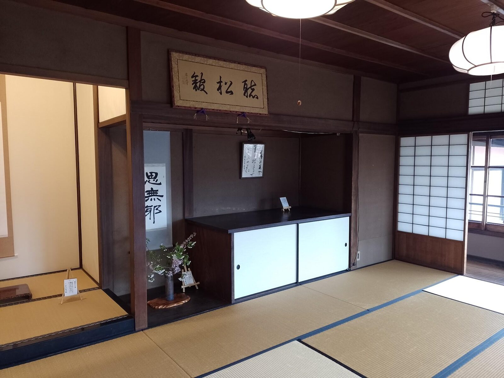
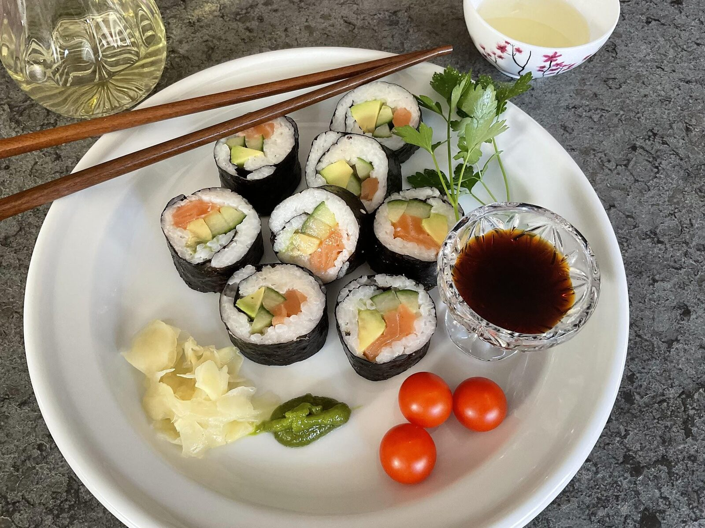
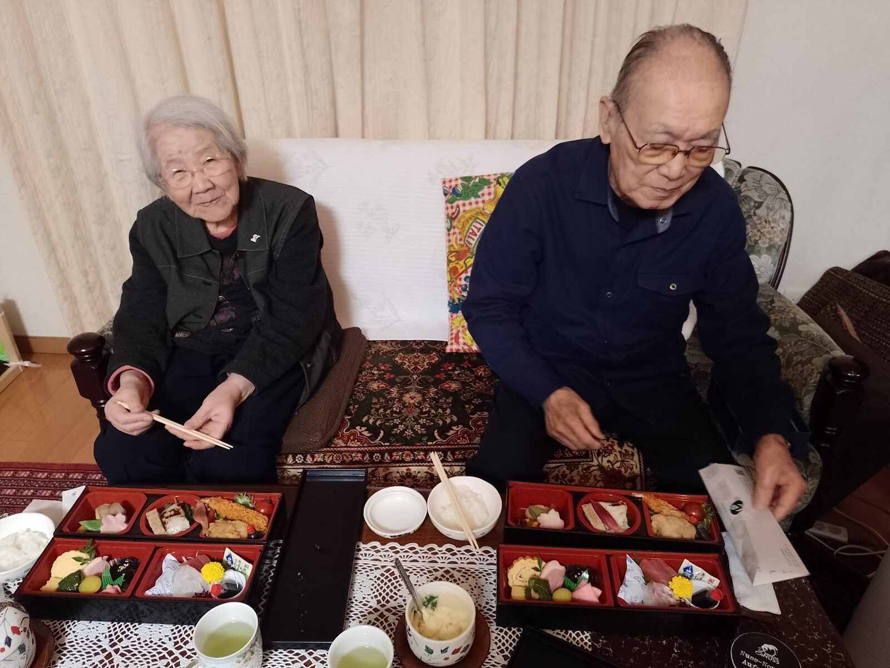
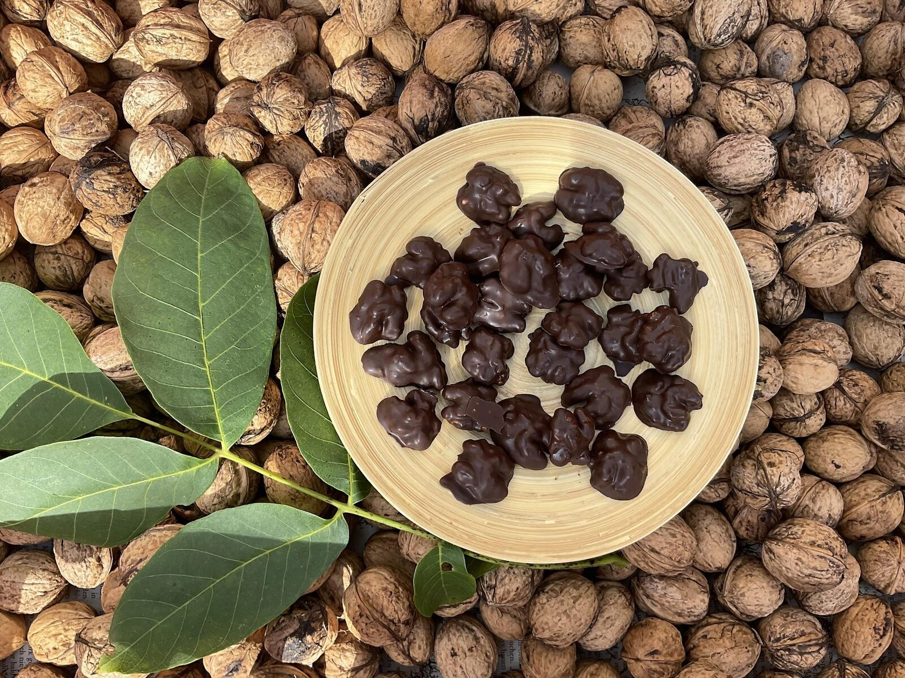

In unmittelbarer Nähe dieses mit unzähligen Früchten voll hängenden Kumquatstrauches gönnen wir uns an Yasukos freien Tag ein opulentes Frühstück. Ich lasse mich wieder einmal von Joachim Ringelnatz inspirieren und dem Geruch nach frischem Gebäck im Café folgt sofort der Appetit nach „Frühstück und nach Leben“. Die Sonne lacht von einem strahlend blauen Himmel und unserer Fahrt nach Handa, ca. 40 km südlich von Nagoya, steht nach dieser Stärkung nichts mehr im Wege.
Im Mizkan Museum
Im Mizkan Museum angekommen, empfängt uns ein etwas anderer „Duft“. Nämlich der einer „Essigbrauerei“. Der japanische Essig – unerlässlich für Sushi – wird entgegen unserem, nicht aus Trauben, sondern aus Reis-Rückständen, die beim Sake-Brauen übrig bleiben, hergestellt. Sake ist übrigens mehr einem Bier als dem Wein ähnlich und hat einen höheren Alkoholgehalt.
Wir buchen eine Führung und werden ausführlich über die Produktion während der verschiedenen Perioden informiert.

Im Hintergrund ein Braukessel aus der frühen Edo (=Tokio) Zeit, die vom 17.–19. Jahrhundert dauerte, sowie weitere Utensilien aus der damaligen Produktion.
Im Garten einer Kaufmannsfamilie
Voll mit Wissen über die frühere, wie auch die heutige moderne Herstellung, entspannen wir uns im nahe gelegenen Garten einer wohlhabenden Familie aus dem 19. Jahrhundert. Auf eigene Faust bekomme ich im dazugehörigen Nakano Hanroku House einen Einblick in die damalige japanische Wohnkultur, so wie sie auch zum Teil noch heute vorhanden ist.

Sushi statt Sake-Brauerei
Die Besichtigung der Sake-Brauerei ist anschließend dann leider nicht möglich. Wir hatten die Öffnungszeiten nicht beachtet. Als Ersatz gibt es im Museums-Restaurant Miso-Suppe und eine Anzahl Sushi-Röllchen mit unterschiedlicher Füllung. Nachdem ich eine Chauffeuse dabei habe, kann ich mir dazu sogar ein Kännchen Sake genehmigen.

Ein Abend bei den Eltern meiner Freundin
Am Abend sind wir in das Haus der Eltern meiner Freundin eingeladen. Ein sehr liebenswürdiges älteres Ehepaar empfängt mich auf eine ganz herzliche Art. Durch die weitere Tochter, die ich bei dieser Gelegenheit kennenlerne, wird ein umfangreiches vorzügliches Dinner geliefert. Zum Glück war der Lunch in Handa nicht ganz so üppig, sodass ich all die Köstlichkeiten probieren kann.

Die Unterhaltung klappt prima mit den Töchtern als Dolmetscher und einer Freundlichkeit und Wärme, die manch nicht ganz so gut verstandenen Satz durch ein Lächeln verständlich macht. Wir singen und tanzen zusammen und es ist ein fröhlicher, wunderbarer Abend, der uns allen sicher noch lange in Erinnerung bleiben wird.
Zum Dessert steuer ich fränkische, schokolierte Walnüsse bei.

Sie dienen u. a. als Hinweis auf die doch wieder reiche Ernte bei Nüssen und Quitten, auch wenn es mit den Äpfeln dieses Jahr aufgrund der Trockenheit nicht so gut aussieht.
Itadakimasu – guten Appetit! いただきます